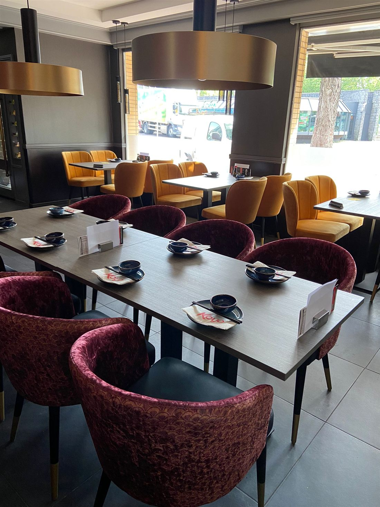
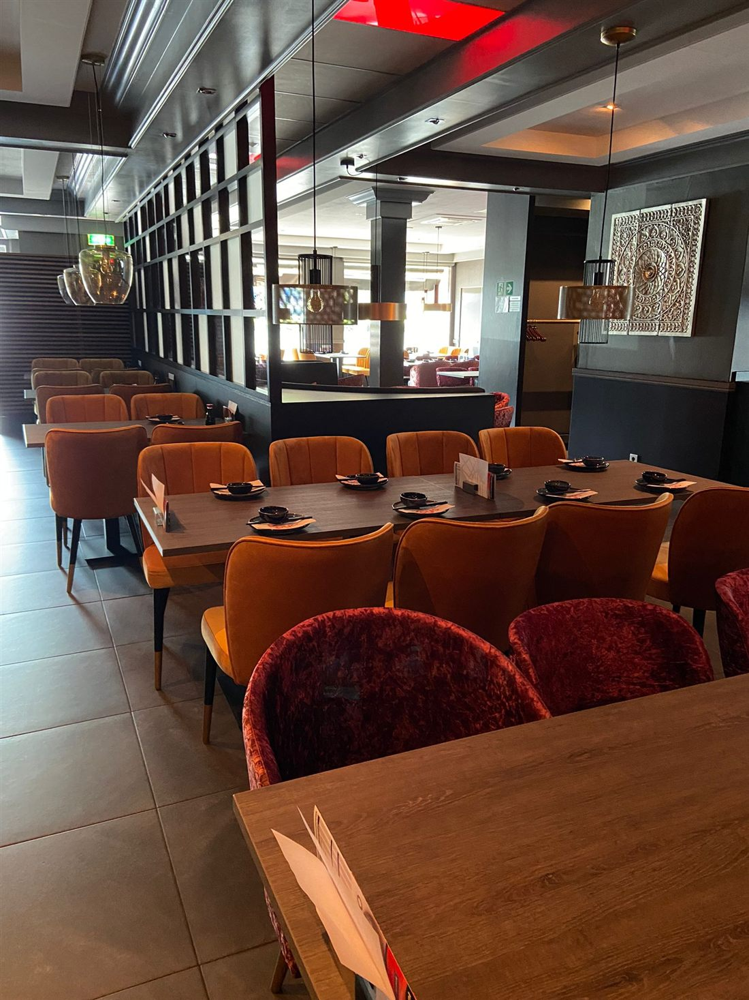
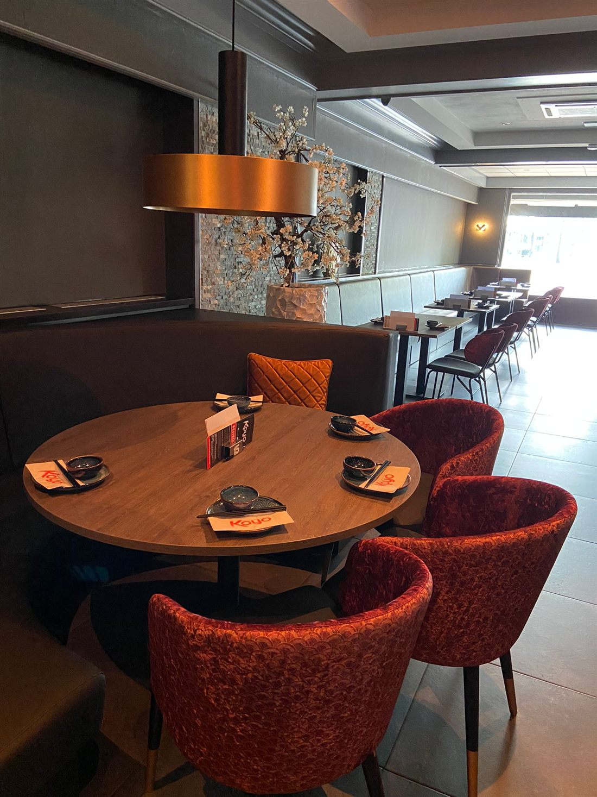

Lunch
Maandag t/m zondag
12.30 – 16.00 uur
€ 32,75
Kinderen 4 t/m 10 jaar € 21,75

Geniet onbeperkt van onze sushi-grill en Chinese gerechten voor een vaste prijs. Voor de lekkerste sushi en chinees in de buurt.
All you can eat: u bestelt per ronde wat u wilt proeven, voor één vaste prijs per persoon.
Maandag t/m zondag
12.30 – 16.00 uur
€ 32,75
Kinderen 4 t/m 10 jaar € 21,75
Maandag t/m woensdag
16.00 – 22.00 uur
€ 37,50
Kinderen 4 t/m 10 jaar € 24,75
Donderdag t/m zondag & feestdagen
€ 39,95
Kinderen 4 t/m 10 jaar € 24,75
Op feestdagen in twee zittingen:
16.15 – 19.00 en 19.15 – 22.00 uur
Vrijdag en zaterdag is de keuken open tot 22.30 uur. De prijzen gelden niet voor de kerstdagen.
Bij restaurant Koyo haalt u voor een lage prijs de lekkerste gerechten af. Bij bestellingen vanaf € 25 kunt u uw eten afhalen of laten bezorgen. We bezorgen van 13.00 tot 22.00 uur.
Bekijk de originele afhaallijst (pdf) · Heeft u een allergie? Meld het ons, dan helpen we u met uw bestelling.
Restaurant Koyo is een sushi-grill en chinees restaurant in Oss. Bij ons kunt u terecht voor de lekkerste sushi en chinees in de buurt.



Ervaar een goede atmosfeer.
Lunch, diner, afhaal en bezorgen.
We maken heerlijke herinneringen. Geniet van ons smakelijke eten.

Leer hoe sushi wordt gemaakt: bekijk een leuke video hoe onze sushichef een rol maakt.
Bekijk de video op FacebookRestaurant Koyo, Chinees en Japans restaurant in Oss, zoekt een zelfstandig werkend kok om ons keukenteam te versterken. Ben jij gepassioneerd over koken, kun je goed zelfstandig werken en houd je van een dynamische omgeving? Dan zijn wij op zoek naar jou!
Interesse? Stuur je sollicitatie naar info@restaurantkoyo.nl. Ook voor meer informatie kun je naar dit adres mailen.
Restaurant Koyo
Spoorbaan 36
5348 KB Oss
0412 - 480165
info@restaurantkoyo.nl
Bel voor reserveringen. Heeft u last van voedselallergieën? Meld het ons, dan helpen we u met uw bestelling.
U kunt parkeren bij Q-Park/P+R aan de Gasstraat, tegenover Koyo. Aan het einde van uw bezoek ontvangt u een uitrijkaart.
Volg ons op Facebook voor eventuele acties.